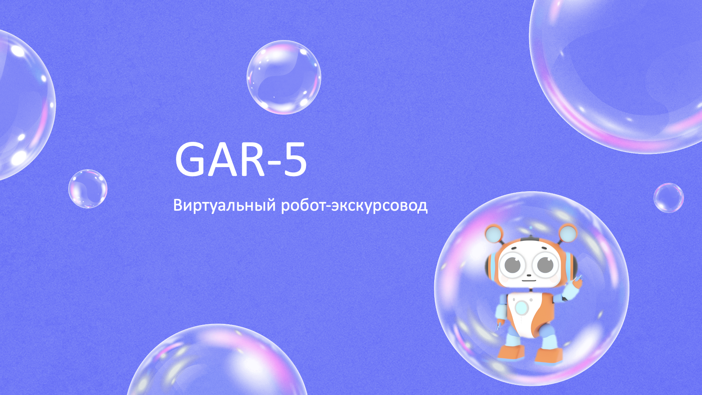

О проекте
Проект направлен на улучшение взаимодействия детей с музейной экспозицией с помощью технологий дополненной реальности. Мы провели исследование поведения посетителей, выявили проблемы с вовлечённостью и предложили решение в виде мобильного AR-приложения. Работа велась студентами Московского Политеха, в команде — более 20 человек, включая сотрудников Робостанции. Использовались: Figma, Unity, Blender и др. инструменты.
